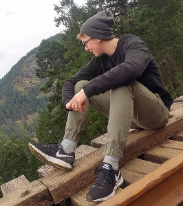

| TYLER  |
Tyler developed his love for electronics when he built his first computer in high school. After receiving his Electronics Technologists Diploma from Camosun, Tyler bridged to UVIC and is currently starting his 4th year in the Computer Engineering program. He is especially interested in embedded systems, and their IOT applications. In his spare time, Tyler likes to hangout with friends or exercise until he can’t walk. |
| GRANT |
Grant is currently studying 4th year computer engineering at UVic after completing a electronics and computer engineering technologist diploma at Camosun College. Grant decided to continue his education through an engineering degree after working as a led firmware developer increase career potential. In his spare time, Grant develops video games through the Unity engine and embedded systems. |
| SIMRAN |
Simran Mann is in 5th year Electrical Engineering at the University of Victoria. She developed an interest in Electrical Engineering throughout high school when speaking with other engineers in the industry and discussed projects that they were working on. She is specializing in mechatronics and power systems and has an interest in wireless communications. In her spare time, she enjoys kickboxing, spending time with family, and exploring the outdoors. |
| MARIO |
Mario's info |
| PATRICK |
Patrick is in his 5th year of electrical engineering at UVic. He developed an interest for engineering and robotics in highschool while competing at robotics competitions. Since then he has decided to specialize in power systems and mechatronics. In his spare time, Patrick enjoys playing competitive ultimate frisbee and hopes to qualify for the Canadian team headed to the Netherlands in 2020. |